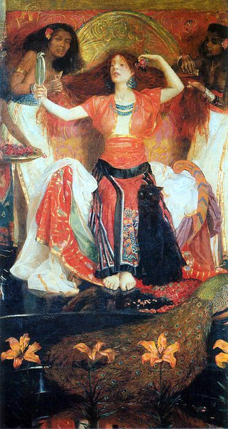

First, Jezebell is a biblical character who may or may not have actually existed. Our primary source on her is the Hebrew bible in the chapter of Kings. She was the Queen of Israel and led alongside King Ahab. She was originally a princess of the Phoenician empire. Like many marriages between royal figures throughout history this one was intended for gains between the two countries. In this case to strengthen trading routes which Israel controlled.
Jezebel understandably is a very negatively portrayed religious figure. She hunted prophets and put others into hiding. In her defense though Elijah did kill hundreds of Baal priests. She condemned property owners to death who refused to sell their land. She also tried to make her religion be the state religion. The biblical text of Kings refers to her as immoral and wicked due to her worship of idols which was actually pretty common at that time.
While she is a tragic figure since she is thrown out of a window and her flesh was devoured by wild animals she did manage to accomplish a great deal before her death. Her power was so great that she was able to convert the religion of an entire country. She was able to lead the persecution of numerous prophets of her country. She convinced her husband to build a shrine to Baal which was her god.